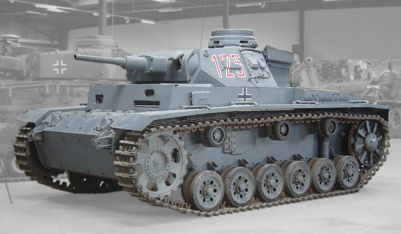
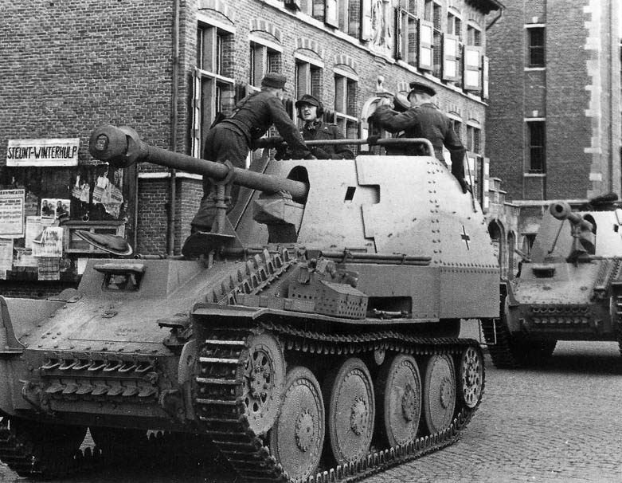
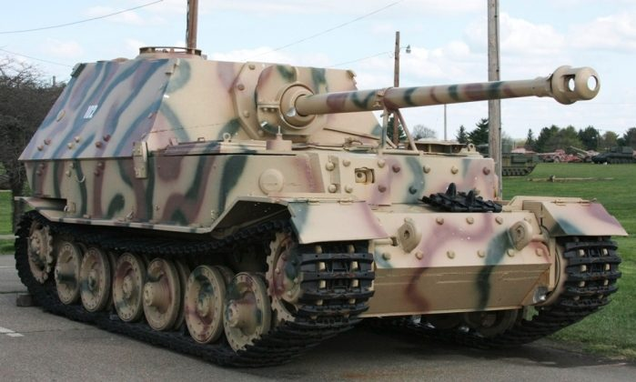
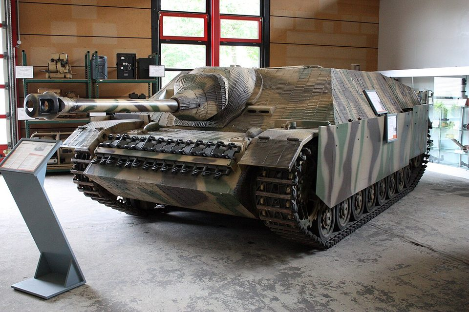
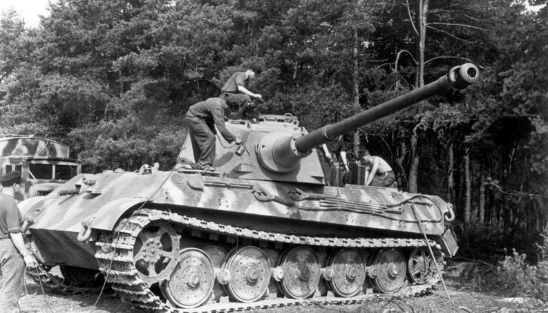
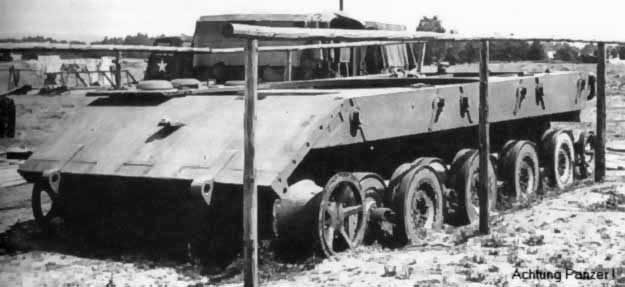

Todos los tanques › Por país › Alemania
Tanques de Alemania
Del A7V de 1918 a los Leopard: Alemania marcó la doctrina acorazada de la Segunda Guerra Mundial y volvió a fabricar carros propios en los años sesenta.
Primera Guerra Mundial
1916–1918 · 2 fichas-
 Alemania · 1918
Alemania · 1918A7V Sturmpanzerwagen
Carro pesado
-
 Alemania · 1918
Alemania · 1918LK II / Stridsvagn m/21
Carro ligero
Entreguerras
1919–1939 · 2 fichas

Segunda Guerra Mundial
1939–1945 · 20 fichas-
 Alemania · 1936
Alemania · 1936Panzer II
Carro ligero
-

Alemania · 1939Panzer III
Carro medio
-
 Alemania · 1939
Alemania · 1939Panzer IV
Carro medio
-
 Alemania · 1940
Alemania · 1940StuG III
Cañón de asalto
-

Alemania · 1942Marder III
Cazacarros
-
 Alemania · 1942
Alemania · 1942Tiger I
Carro pesado
-

Alemania · 1943Ferdinand / Elefant
Cazacarros pesado
-
 Alemania · 1943
Alemania · 1943Nashorn
Cazacarros
-
 Alemania · 1943
Alemania · 1943Panther
Carro medio
-
 Alemania · 1943
Alemania · 1943Sturmpanzer IV «Brummbär»
Obús de asalto
-
 Alemania · 1943
Alemania · 1943Wespe
Obús autopropulsado
-
 Alemania · 1944
Alemania · 1944Jagdpanther
Cazacarros
-
 Alemania · 1944
Alemania · 1944Jagdpanzer 38 «Hetzer»
Cazacarros ligero
-

Alemania · 1944Jagdpanzer IV
Cazacarros
-
 Alemania · 1944
Alemania · 1944Jagdtiger
Cazacarros pesado
-
 Alemania · 1944
Alemania · 1944Panzer VIII Maus
Prototipo de carro superpesado
-
 Alemania · 1944
Alemania · 1944Sturmtiger
Mortero de asalto pesado
-

Alemania · 1944Tiger II
Carro pesado
-
 Alemania · 1945
Alemania · 1945Kugelpanzer
Vehículo experimental
-

Alemania · 1945Panzerkampfwagen E-100
Prototipo de carro superpesado